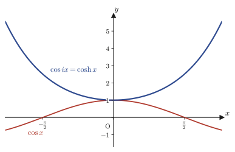

第21章複素数と複素平面
方程式 $x^2+1=0$ は，実数の中には解を持たない．しかし「2乗すると $-1$ になる数」を $i$（虚数単位，imaginary unit）という新しい記号で名付け，実数 $a,b$ を使って $z=a+bi$ という形の数（複素数，complex number）の世界にまで数の範囲を広げると，この方程式にも $x=\pm i$ という解が現れる．ここまでは高校数学IIで学んだとおりである．本章から始まる第V部「複素解析学」では，この複素数を単なる「解の集合を広げるための道具」としてではなく，平面上の点（あるいは原点からの矢印）として捉え直し，そこに広がる幾何学と解析学——複素解析学（complex analysis）——の入り口に立つ．
複素数 $z=a+bi$ を，$x$ 座標が $a$，$y$ 座標が $b$ である平面上の点，すなわち複素平面（complex plane，ガウス平面とも呼ぶ）上の点として見ると，それまで代数的な計算規則にすぎなかった複素数の四則演算に，長さ・角度・回転といった幾何学的な意味が宿る．たとえば「2つの複素数を掛け合わせる」という演算は，実は「長さ（絶対値）を掛け合わせ，角度（偏角）を足し合わせる」という，驚くほど単純な操作に等しいことを本章で確かめる．この事実の背後にあるのが，指数関数と三角関数を結びつけるオイラーの公式 $e^{i\theta}=\cos\theta+i\sin\theta$ であり，これは工学・物理学・材料科学のあらゆる場所——交流回路のインピーダンス，波動や振動の記述，量子力学の波動関数の位相，フーリエ変換（第30章）やラプラス変換（第31章）——に現れる，理系の基礎体力とも言うべき道具である．本章では，この公式を天下り的に受け入れるのではなく，第4章で学んだマクローリン展開を使って自分の手で導出する．
- 複素数の絶対値 $|\alpha|=\sqrt{a^2+b^2}$ を「原点からの距離」として導入し，$|\alpha|^2=\alpha\bar\alpha$，$|\alpha|=|-\alpha|=|\bar\alpha|=|-\bar\alpha|$ などの基本性質を証明する
- 複素数の極形式 $z=r(\cos\theta+i\sin\theta)$（$r=|z|$，$\theta=\arg z$）を，実軸方向・虚軸方向の単位ベクトルによる分解として導入する
- 極形式どうしの積・商が，加法定理を通じて「絶対値の積・商」と「偏角の和・差」に分解されること
- ド・モアブルの定理 $(\cos\theta+i\sin\theta)^n=\cos n\theta+i\sin n\theta$ の数学的帰納法による証明と，$|e^{i\theta}|=1$，$\overline{e^{i\theta}}=e^{-i\theta}$ などの性質
- オイラーの公式 $e^{i\theta}=\cos\theta+i\sin\theta$ のマクローリン展開による導出（第4章の復習を兼ねる）
- $1$ の $n$ 乗根が複素平面上の正 $n$ 角形の頂点をなすこと，そして「$i$ を掛けることは90°回転すること」という回転作用素としての見方
- 三角関数 $\cos\theta,\sin\theta$ と双曲線関数 $\cosh x,\sinh x$ が，虚数を代入することで互いに移り合うこと（$\cos ix=\cosh x$ など）
- 複素平面上の直線・円の方程式を，$z$ とその共役 $\bar z$ だけを使って表す方法
もとにしたノート：望月泰英『数学ノート 複素解析学』 pp. 1–8．
21.1 複素数の絶対値と共役複素数
複素解析学の第一歩として，まず高校数学IIで学んだ複素数の基本語彙を手短に復習しておく．
定義21.1 複素数と共役複素数（復習）
2乗すると $-1$ になる数を虚数単位（imaginary unit）と呼び，$i$ で表す：$i^2=-1$．実数 $a,b$ を用いて $z=a+bi$ の形に表される数を複素数（complex number）と呼び，複素数全体の集合を $\C$ で表す．$a$ を $z$ の実部（real part，$\operatorname{Re}z$ とも書く），$b$ を $z$ の虚部（imaginary part，$\operatorname{Im}z$）と呼ぶ．また，虚部の符号だけを反転させた複素数 $\bar z=a-bi$ を $z$ の共役複素数（complex conjugate）と呼ぶ．
複素数 $z=a+bi$ は，実部 $a$ を横軸（$x$軸），虚部 $b$ を縦軸（$y$軸）にとった平面上の点 $(a,b)$ に対応させることができる．この平面を複素平面（complex plane）と呼び，横軸を実軸，縦軸を虚軸と呼ぶ．以下，本章では複素数 $\alpha,z$ を，複素平面上の原点 $O$ から点 $\alpha,z$ に向かって伸びるベクトル（矢印）として図示する．
21.1.1 複素数の絶対値 — 距離としての定義
定義21.2 複素数の絶対値（大きさ）
複素数 $\alpha=a+bi$ を複素平面上の点 $(a,b)$ とみなす．原点 $O(0,0)$ から点 $\alpha$ までの距離を $\alpha$ の絶対値（absolute value）または大きさ（modulus）と呼び，$|\alpha|$ で表す．
この距離を，座標 $a,b$ を使った式で表そう．原点 $O$，点 $(a,0)$，点 $\alpha=(a,b)$ の3点を頂点とする三角形を考える（図21.1）．辺 $O$–$(a,0)$ の長さは $|a|$，辺 $(a,0)$–$\alpha$ の長さは $|b|$ であり，この2辺は互いに直交する（一方は実軸に平行，他方は実軸に垂直だから）．したがって，斜辺 $O$–$\alpha$ の長さが，求めたい距離 $|\alpha|$ である．中学校で学んだ三平方の定理（ピタゴラスの定理，Pythagorean theorem；直角三角形において，斜辺の長さの2乗は他の2辺の長さの2乗の和に等しいという定理）を，この直角三角形に適用すると，
$$|\alpha|^2=|a|^2+|b|^2=a^2+b^2$$（実数 $a$ に対して $|a|^2=a^2$ である．符号によらず2乗すれば同じ値になるからである．）両辺とも $0$ 以上の実数なので，平方根をとってよく，
\begin{equation} |\alpha|=\sqrt{a^2+b^2}\label{eq:21-abs} \end{equation}が得られる．
21.1.2 絶対値と共役複素数の関係
公式21.1 $|\alpha|^2=\alpha\bar\alpha$
$\alpha=a+bi$ とすると $\bar\alpha=a-bi$ である．積 $\alpha\bar\alpha$ を計算する．
$$\alpha\bar\alpha=(a+bi)(a-bi)=a\cdot a+a\cdot(-bi)+bi\cdot a+bi\cdot(-bi)=a^2-abi+abi-b^2i^2$$（分配法則で4つの項に展開した．）中央の2項 $-abi$ と $+abi$ は互いに打ち消し合う．また $i^2=-1$ なので $-b^2i^2=-b^2\cdot(-1)=b^2$．よって
$$\alpha\bar\alpha=a^2+b^2$$一方，式 \eqref{eq:21-abs} の両辺を2乗すれば $|\alpha|^2=a^2+b^2$ であった．右辺が一致するので，
\begin{equation} \therefore |\alpha|^2=\alpha\bar\alpha\label{eq:21-abssq} \end{equation}（証明終わり）
なぜ重要か：$|\alpha|^2=\alpha\bar\alpha$ の使いどころ
式 \eqref{eq:21-abssq} は，「絶対値の2乗」という幾何学的な量を，「複素数どうしの積」という代数的な計算に翻訳してくれる，複素解析全体で最も頻繁に使う変換公式の1つである．特に，複素数を分母に持つ分数を実数の分母に直したいとき（21.3節の商の計算で使う），分母の複素数とその共役を掛けて $|\text{分母}|^2$ という実数を作り出す，という手法の理論的根拠になっている．
公式21.2 $|\alpha|=|-\alpha|=|\bar\alpha|=|-\bar\alpha|$
複素数 $\alpha=a+bi$ に対して，$-\alpha=-a-bi$，$\bar\alpha=a-bi$，$-\bar\alpha=-a+bi$ である．絶対値の定義（定義21.2）より，これらはそれぞれ複素平面上の点 $(-a,-b)$，$(a,-b)$，$(-a,b)$ に対応する．絶対値の公式（式 \eqref{eq:21-abs}）を使うと，
$$|-\alpha|=\sqrt{(-a)^2+(-b)^2}=\sqrt{a^2+b^2}=|\alpha|,\qquad |\bar\alpha|=\sqrt{a^2+(-b)^2}=\sqrt{a^2+b^2}=|\alpha|$$ $$|-\bar\alpha|=\sqrt{(-a)^2+b^2}=\sqrt{a^2+b^2}=|\alpha|$$（座標の符号を反転させても，2乗すれば符号は消えるので，根号の中身は変わらない．）よって4つの絶対値はすべて等しい．
イメージ：4点は原点を中心とする長方形の頂点
絶対値は「原点からの距離」だったから，$|\alpha|=|-\alpha|=|\bar\alpha|=|-\bar\alpha|$ は「この4点はすべて原点を中心とする同じ円周上にある」ことを意味する．実際には，4点 $\alpha=(a,b)$，$-\bar\alpha=(-a,b)$，$-\alpha=(-a,-b)$，$\bar\alpha=(a,-b)$ は，$x$座標・$y$座標がそれぞれ $\pm a,\pm b$ の組み合わせなので，原点を中心とする長方形の4頂点をなす（図21.2）．対角線 $\alpha$–$(-\alpha)$ と $(-\bar\alpha)$–$\bar\alpha$ は，どちらも原点を通る．
21.1.3 実軸と虚軸の線形独立性
複素数全体の集合 $\C$ は，実数を係数とするベクトル空間ともみなせる（第10章「線形空間」参照）．実軸方向の基底ベクトルを $e_R=1$，虚軸方向の基底ベクトルを $e_I=i$ とおくと，任意の複素数 $z=a+bi$ は $z=a\,e_R+b\,e_I$（$a,b\in\R$）の形に表される．ここで，$e_R,e_I$ が実数係数に関して線形独立（linearly independent；$C_1e_R+C_2e_I=0$ を満たす実数の組 $(C_1,C_2)$ が $(0,0)$ に限られること）であることを確認しておこう．これは，のちの議論で「複素数の実部どうし，虚部どうしを比べてよい」という操作の理論的な裏付けになる．
定理21.1 実軸・虚軸の線形独立性
$C_1,C_2\in\R$ とする．$C_1e_R+C_2e_I=0$ ならば，$C_1=C_2=0$ である．
証明
$e_R=1,\ e_I=i$ を代入すると，
$$C_1e_R+C_2e_I=C_1\cdot1+C_2\cdot i=C_1+C_2i$$これが $0$ に等しいとする．複素数 $C_1+C_2i$（実部 $C_1$，虚部 $C_2$）が $0$（実部も虚部も $0$ である複素数）に等しいということは，実部どうし・虚部どうしがそれぞれ等しい，すなわち $C_1=0$ かつ $C_2=0$ ということに他ならない．
（ノートの原文ではこの式を $C_1e_R+iC_2e_I=0$ と，虚軸成分に改めて $i$ を掛ける形で書いている．これは，$e_R,e_I$ を「大きさ $1$ の実2次元平面の基底ベクトル」とみなし，その虚軸成分をあとから $i$ 倍して初めて複素数に埋め込む，という書き方に相当する．本書ではあらかじめ $e_R=1,\ e_I=i$ と，$e_I$ 自身に $i$ を含めて定めた（21.1.3節の定義）ので，改めて $i$ を掛ける必要はなく，上のように $C_1e_R+C_2e_I=C_1+C_2i$ となる．）
$$\therefore C_1=C_2=0$$（証明終わり）
例題21.1 絶対値の性質の確認
$z=3-4i$ について，次を求めよ．(1) $|z|$．(2) $z\bar z$ を計算し，$|z|^2=z\bar z$（式 \eqref{eq:21-abssq}）を確かめよ．(3) $-z,\ \bar z,\ -\bar z$ の絶対値をそれぞれ求め，公式21.2 を確かめよ．
解答 (1) $a=3,\ b=-4$ なので，式 \eqref{eq:21-abs} より
$$|z|=\sqrt{3^2+(-4)^2}=\sqrt{9+16}=\sqrt{25}=5$$(2) 共役複素数は虚部の符号だけを反転させるので $\bar z=3+4i$．よって
$$z\bar z=(3-4i)(3+4i)=3^2-(4i)^2=9-16i^2=9-16\cdot(-1)=9+16=25$$（$(A-B)(A+B)=A^2-B^2$ の形の展開を使った．$A=3,B=4i$．）$|z|^2=5^2=25$ であったから，$z\bar z=|z|^2$ が確かに成り立つ．
(3) $-z=-3+4i$ より $|-z|=\sqrt{(-3)^2+4^2}=\sqrt{9+16}=5$．$\bar z=3+4i$ より $|\bar z|=\sqrt{3^2+4^2}=5$．$-\bar z=-3-4i$ より $|-\bar z|=\sqrt{(-3)^2+(-4)^2}=5$．いずれも $|z|=5$ に一致し，公式21.2 が確かめられた．
21.2 複素数の極形式 — 長さと角度で表す
21.1節で扱った絶対値 $|z|$ は，複素数 $z$ の「大きさ」だけを取り出す量であった．しかし，複素平面上のベクトルとして $z$ を完全に指定するには，大きさに加えて「向き」も必要である．この節では，原点から $z$ へ向かう矢印が実軸の正方向となす角度を使って，$z$ を「長さ $r$ と角度 $\theta$ の組」として表す極形式を導入する．以下，$z\ne0$ とする（$z=0$ には向きが定義できない）．
21.2.1 ベクトルの1次結合による極形式の導出
$z=a+bi$ とする．21.1.3節の記号を使うと，$z=a\,e_R+b\,e_I$（$e_R=1$：実軸方向の単位ベクトル，$e_I=i$：虚軸方向の単位ベクトル）と書けた．$r=|z|=\sqrt{a^2+b^2}$（$z\ne0$ より $r>0$）とし，原点から $z$ へ向かう矢印が実軸の正方向となす角（反時計回りに測る）を $\theta$ とおく．図21.3のように，原点・点$(a,0)$・点$z=(a,b)$ を頂点とする直角三角形において，斜辺の長さが $r$，$\theta$ を挟む隣辺（実軸方向）の長さが $a$，対辺（虚軸方向）の長さが $b$ であるから，三角比の定義（高校数学 第3章「図形と計量」参照）より，
$$\cos\theta=\frac{a}{r},\qquad \sin\theta=\frac{b}{r}\qquad\text{すなわち}\qquad a=r\cos\theta,\quad b=r\sin\theta$$が成り立つ．これを $z=a\,e_R+b\,e_I$ に代入すると，
$$z=(r\cos\theta)\cdot e_R+(r\sin\theta)\cdot e_I=(r\cos\theta)\cdot1+(r\sin\theta)\cdot i=r\cos\theta+ir\sin\theta$$（$e_R=1,\ e_I=i$ を代入し，実数の積の順序を入れ替えただけである．）右辺を $r$ でくくれば，
\begin{equation} \therefore z=r(\cos\theta+i\sin\theta)\label{eq:21-polar} \end{equation}が得られる．
定義21.3 複素数の偏角と極形式
$z\ne0$ とする．原点から $z$ へ向かう矢印が実軸の正方向となす角（反時計回りを正とする）を $z$ の偏角（argument）と呼び，$\arg z$ で表す．$r=|z|$，$\theta=\arg z$ とおくとき，式 \eqref{eq:21-polar} の形の表示 $z=r(\cos\theta+i\sin\theta)$ を $z$ の極形式（polar form）と呼ぶ．
$\cos,\sin$ は周期 $2\pi$ の関数なので，$\theta$ を $2\pi$ の整数倍だけずらしても同じ複素数 $z$ を表す．したがって $\arg z$ は，$2\pi$ の整数倍の違いを除いて一意に定まる（本書では特に断らない限り，$\theta$ の範囲は限定しない）．
21.2.2 別解：絶対値の公式から直接くくり出す
別解（もう1つの導き方）
先ほどとは独立に，21.1節の絶対値の公式（式 \eqref{eq:21-abs}）だけから極形式を導くこともできる．$z=a+bi\ (z\ne0)$ とし，$r=|z|=\sqrt{a^2+b^2}$ とおく．$z$ の実部・虚部から $r$ を無理やりくくり出す：
$$z=a+bi=\sqrt{a^2+b^2}\left(\frac{a}{\sqrt{a^2+b^2}}+i\,\frac{b}{\sqrt{a^2+b^2}}\right)=r\left(\frac{a}{r}+i\,\frac{b}{r}\right)$$（分子・分母をどちらも $r=\sqrt{a^2+b^2}$ で割っただけで，値は変わらない．）ここで，$\left(\dfrac{a}{r}\right)^2+\left(\dfrac{b}{r}\right)^2=\dfrac{a^2+b^2}{r^2}=\dfrac{r^2}{r^2}=1$ が成り立つので，$\dfrac{a}{r},\dfrac{b}{r}$ を座標とする点は単位円周上にある．したがって，ある角 $\theta$ を用いて
$$\frac{a}{r}=\cos\theta,\qquad \frac{b}{r}=\sin\theta$$と表せる（単位円上の点は，$x$座標が $\cos\theta$，$y$座標が $\sin\theta$ となる角 $\theta$ をちょうど1つ，$2\pi$ の違いを除いて持つ）．これを代入すれば，
$$\therefore z=r(\cos\theta+i\sin\theta)$$となり，式 \eqref{eq:21-polar} が別の道筋からも確認できた．
例題21.2 極形式への変換
$z=1+\sqrt3\,i$ を極形式 $z=r(\cos\theta+i\sin\theta)$ で表せ．
解答 $a=1,\ b=\sqrt3$ である．式 \eqref{eq:21-abs} より，
$$r=|z|=\sqrt{1^2+(\sqrt3)^2}=\sqrt{1+3}=\sqrt4=2$$次に $\theta$ を求める．
$$\cos\theta=\frac{a}{r}=\frac{1}{2},\qquad \sin\theta=\frac{b}{r}=\frac{\sqrt3}{2}$$$\cos\theta=\frac12$ かつ $\sin\theta=\frac{\sqrt3}{2}$ を同時に満たす角は $\theta=\dfrac{\pi}{3}$（$60°$）である（高校数学 第3章の三角比の表を思い出そう）．よって，
$$z=2\left(\cos\frac{\pi}{3}+i\sin\frac{\pi}{3}\right)$$（検算：$2\cos\frac{\pi}3+2i\sin\frac{\pi}3=2\cdot\frac12+2i\cdot\frac{\sqrt3}2=1+\sqrt3i=z$ で元に戻る．）
21.3 極形式による積と商 — 角度の足し算・引き算
極形式のありがたみは，掛け算・割り算をしたときに際立つ．$z_1=r_1(\cos\theta_1+i\sin\theta_1)$，$z_2=r_2(\cos\theta_2+i\sin\theta_2)$（$z_2\ne0$）とする．
21.3.1 積の極形式
公式21.3 $z_1z_2=r_1r_2\{\cos(\theta_1+\theta_2)+i\sin(\theta_1+\theta_2)\}$
定義どおりに掛け算を実行する．
$$z_1z_2=r_1(\cos\theta_1+i\sin\theta_1)\cdot r_2(\cos\theta_2+i\sin\theta_2)=r_1r_2(\cos\theta_1+i\sin\theta_1)(\cos\theta_2+i\sin\theta_2)$$右側のかっこどうしを分配法則で展開する（4つの項が出る）．
$$=r_1r_2\big(\cos\theta_1\cos\theta_2+i\sin\theta_1\cos\theta_2+i\cos\theta_1\sin\theta_2+i^2\sin\theta_1\sin\theta_2\big)$$$i^2=-1$ なので，最後の項 $i^2\sin\theta_1\sin\theta_2=-\sin\theta_1\sin\theta_2$ は実部に合流する．虚部の2つの項 $i\sin\theta_1\cos\theta_2$ と $i\cos\theta_1\sin\theta_2$ は $i$ でくくれる．整理すると，
$$=r_1r_2\Big\{\underbrace{(\cos\theta_1\cos\theta_2-\sin\theta_1\sin\theta_2)}_{\text{加法定理より }\cos(\theta_1+\theta_2)}+i\underbrace{(\sin\theta_1\cos\theta_2+\cos\theta_1\sin\theta_2)}_{\text{加法定理より }\sin(\theta_1+\theta_2)}\Big\}$$下線部はどちらも，高校数学 第5章の三角関数の加法定理 $\cos(\alpha+\beta)=\cos\alpha\cos\beta-\sin\alpha\sin\beta$，$\sin(\alpha+\beta)=\sin\alpha\cos\beta+\cos\alpha\sin\beta$ とちょうど同じ形をしている．そのまま代入すると，
\begin{equation} \therefore z_1z_2=r_1r_2\{\cos(\theta_1+\theta_2)+i\sin(\theta_1+\theta_2)\}\label{eq:21-polar-product} \end{equation}（証明終わり）
イメージ：掛け算は「長さの積」と「角度の和」
式 \eqref{eq:21-polar-product} は，「2つの複素数を掛けると，絶対値（長さ）は掛け合わされ，偏角（角度）は足し合わされる」ことを述べている．図21.4のように，原点を中心に $z_1$ を角 $\theta_2$ だけ回転させながら $r_2$ 倍に拡大（縮小）した先に $z_1z_2$ が現れる，というイメージである．この「掛け算＝回転＋拡大縮小」という見方は，21.5節で $i$ を掛ける操作を考えるときにも中心的な役割を果たす．
21.3.2 商の極形式
公式21.4 $\dfrac{z_1}{z_2}=\dfrac{r_1}{r_2}\{\cos(\theta_1-\theta_2)+i\sin(\theta_1-\theta_2)\}$（$z_2\ne0$）
定義どおりに割り算を書き下す．
$$\frac{z_1}{z_2}=\frac{r_1(\cos\theta_1+i\sin\theta_1)}{r_2(\cos\theta_2+i\sin\theta_2)}$$分母に虚数が残っていると計算しにくいので，21.1節の公式21.1（$|\alpha|^2=\alpha\bar\alpha$）と同じ発想で，分母・分子の両方に，分母の共役にあたる $\cos\theta_2-i\sin\theta_2$ を掛けて分母を実数化する．
$$=\frac{r_1(\cos\theta_1+i\sin\theta_1)(\cos\theta_2-i\sin\theta_2)}{r_2\underbrace{(\cos\theta_2+i\sin\theta_2)(\cos\theta_2-i\sin\theta_2)}_{=\cos^2\theta_2-i^2\sin^2\theta_2=\cos^2\theta_2+\sin^2\theta_2=1}}$$（下線部：$(A+B)(A-B)=A^2-B^2$ の形に展開し，$i^2=-1$ と $\cos^2\theta_2+\sin^2\theta_2=1$（三角関数の基本公式）を使った．）分母がちょうど $1$ になったので，
$$=\frac{r_1}{r_2}(\cos\theta_1+i\sin\theta_1)(\cos\theta_2-i\sin\theta_2)$$分子を展開する．
$$=\frac{r_1}{r_2}\big(\cos\theta_1\cos\theta_2-i\cos\theta_1\sin\theta_2+i\sin\theta_1\cos\theta_2-i^2\sin\theta_1\sin\theta_2\big)$$$-i^2\sin\theta_1\sin\theta_2=+\sin\theta_1\sin\theta_2$ であることに注意して整理すると，
$$=\frac{r_1}{r_2}\Big\{\underbrace{(\cos\theta_1\cos\theta_2+\sin\theta_1\sin\theta_2)}_{\text{加法定理より }\cos(\theta_1-\theta_2)}+i\underbrace{(\sin\theta_1\cos\theta_2-\cos\theta_1\sin\theta_2)}_{\text{加法定理より }\sin(\theta_1-\theta_2)}\Big\}$$下線部は，加法定理 $\cos(\alpha-\beta)=\cos\alpha\cos\beta+\sin\alpha\sin\beta$，$\sin(\alpha-\beta)=\sin\alpha\cos\beta-\cos\alpha\sin\beta$ の形そのものである．よって，
\begin{equation} \therefore \frac{z_1}{z_2}=\frac{r_1}{r_2}\{\cos(\theta_1-\theta_2)+i\sin(\theta_1-\theta_2)\}\label{eq:21-polar-quotient} \end{equation}（証明終わり）
例題21.3 積の公式で $\cos\dfrac{\pi}{12}$ を求める
$\dfrac{\pi}{12}=\dfrac{\pi}{4}-\dfrac{\pi}{6}$であることに着目し，絶対値 $1$ の複素数どうしの積の公式（公式21.3，ただし角度の差なので公式21.4 も使う）を利用して $\cos\dfrac{\pi}{12}$ の値を求めよ．
解答 $w_1=\cos\frac{\pi}4+i\sin\frac{\pi}4$，$w_2=\cos\frac{\pi}6+i\sin\frac{\pi}6$ とおく（どちらも $r=1$ の極形式）．公式21.4（商，$r_1=r_2=1$ の場合）より，
$$\frac{w_1}{w_2}=\cos\left(\frac{\pi}4-\frac{\pi}6\right)+i\sin\left(\frac{\pi}4-\frac{\pi}6\right)=\cos\frac{\pi}{12}+i\sin\frac{\pi}{12}$$一方，$\dfrac{w_1}{w_2}=w_1\cdot\overline{w_2}$（$|w_2|=1$ なので $w_2^{-1}=\overline{w_2}=\cos\frac{\pi}6-i\sin\frac{\pi}6$，公式21.1 の考え方）であるから，直接展開して実部を比較すればよい．
$$w_1\overline{w_2}=\left(\cos\frac{\pi}4+i\sin\frac{\pi}4\right)\left(\cos\frac{\pi}6-i\sin\frac{\pi}6\right)$$ $$=\cos\frac{\pi}4\cos\frac{\pi}6-i\cos\frac{\pi}4\sin\frac{\pi}6+i\sin\frac{\pi}4\cos\frac{\pi}6-i^2\sin\frac{\pi}4\sin\frac{\pi}6$$実部（$i$ を含まない項）だけを集めると $\cos\frac{\pi}4\cos\frac{\pi}6+\sin\frac{\pi}4\sin\frac{\pi}6$ である（$-i^2\sin\frac{\pi}4\sin\frac{\pi}6=+\sin\frac{\pi}4\sin\frac{\pi}6$ に注意）．これが $\cos\frac{\pi}{12}$ に等しいので，
$$\cos\frac{\pi}{12}=\cos\frac{\pi}4\cos\frac{\pi}6+\sin\frac{\pi}4\sin\frac{\pi}6=\frac{\sqrt2}{2}\cdot\frac{\sqrt3}{2}+\frac{\sqrt2}{2}\cdot\frac12=\frac{\sqrt6}{4}+\frac{\sqrt2}{4}=\frac{\sqrt6+\sqrt2}{4}$$（これは加法定理 $\cos(\alpha-\beta)=\cos\alpha\cos\beta+\sin\alpha\sin\beta$ を極形式の積の公式から「再発見」したことに相当する．数値でも $\frac{\sqrt6+\sqrt2}{4}=0.9659\ldots=\cos15°$ で確認できる．）
例題21.4 極形式による積の計算
$z_1=\sqrt3+i$，$z_2=1-i$ とする．$z_1,z_2$ をそれぞれ極形式に直し，公式21.3 を使って積 $z_1z_2$ を求めよ．さらに，$z_1z_2$ を直接展開した結果と一致することを確かめよ．
解答 $z_1=\sqrt3+i$：$r_1=\sqrt{(\sqrt3)^2+1^2}=\sqrt{3+1}=2$，$\cos\theta_1=\frac{\sqrt3}{2},\sin\theta_1=\frac12$ より $\theta_1=\dfrac{\pi}{6}$．$z_2=1-i$：$r_2=\sqrt{1^2+(-1)^2}=\sqrt2$，$\cos\theta_2=\frac{1}{\sqrt2},\sin\theta_2=-\frac{1}{\sqrt2}$ より $\theta_2=-\dfrac{\pi}{4}$．したがって，
$$z_1=2\left(\cos\frac{\pi}6+i\sin\frac{\pi}6\right),\qquad z_2=\sqrt2\left(\cos\left(-\frac{\pi}4\right)+i\sin\left(-\frac{\pi}4\right)\right)$$公式21.3 より，
$$z_1z_2=2\sqrt2\left\{\cos\left(\frac{\pi}6-\frac{\pi}4\right)+i\sin\left(\frac{\pi}6-\frac{\pi}4\right)\right\}=2\sqrt2\left\{\cos\left(-\frac{\pi}{12}\right)+i\sin\left(-\frac{\pi}{12}\right)\right\}$$（$\frac{\pi}6-\frac{\pi}4=\frac{2\pi}{12}-\frac{3\pi}{12}=-\frac{\pi}{12}$．）一方，直接展開すると，
$$z_1z_2=(\sqrt3+i)(1-i)=\sqrt3\cdot1+\sqrt3\cdot(-i)+i\cdot1+i\cdot(-i)=\sqrt3-\sqrt3i+i-i^2$$（分配法則で4項に展開した．）$-i^2=1$ に注意して整理すると，
$$=\sqrt3+1+(1-\sqrt3)i=(1+\sqrt3)+(1-\sqrt3)i$$という結果になる．極形式の答え $2\sqrt2\{\cos(-\frac{\pi}{12})+i\sin(-\frac{\pi}{12})\}$ がこれと一致することを数値で確かめよう．$\sqrt{12}=2\sqrt3$ に注意すると，
$$2\sqrt2\cos\left(-\frac{\pi}{12}\right)=2\sqrt2\cdot\frac{\sqrt6+\sqrt2}{4}=\frac{2\sqrt{12}+2\cdot2}{4}=\frac{4\sqrt3+4}{4}=\sqrt3+1$$（$\cos(-\pi/12)=\cos(\pi/12)=\frac{\sqrt6+\sqrt2}{4}$ は例題21.3 ですでに求めた値を用いた．$\sqrt2\cdot\sqrt6=\sqrt{12}=2\sqrt3$，$\sqrt2\cdot\sqrt2=2$ を使って分子を整理した．）これは実部 $\sqrt3+1$ と一致する．虚部も同様に $2\sqrt2\sin(-\pi/12)=1-\sqrt3$ となり一致する（$\sin(-\pi/12)=-\sin(\pi/12)=-\frac{\sqrt6-\sqrt2}{4}$ を使う；付録の検算スクリプトで数値的にも確認済み）．
21.4 ド・モアブルの定理とオイラーの公式
前節で見た「積の偏角は偏角の和になる」という法則（公式21.3）を，同じ複素数どうしで何度も繰り返し使うとどうなるだろうか．$n$ 乗の計算に関する強力な定理が得られる．
21.4.1 ド・モアブルの定理
定理21.2 ド・モアブルの定理
自然数 $n$ に対して，
\begin{equation} (\cos\theta+i\sin\theta)^n=\cos n\theta+i\sin n\theta\label{eq:21-demoivre} \end{equation}が成り立つ．
証明（数学的帰納法）
(i) $n=1$ のとき．左辺は $(\cos\theta+i\sin\theta)^1=\cos\theta+i\sin\theta$，右辺は $\cos(1\cdot\theta)+i\sin(1\cdot\theta)=\cos\theta+i\sin\theta$ で一致し，成り立つ．
(ii) $n=k$（$k$ は自然数）のとき成り立つと仮定する．すなわち，
$$(\cos\theta+i\sin\theta)^k=\cos k\theta+i\sin k\theta\qquad\cdots②$$を仮定する．この仮定のもとで，$n=k+1$ のときにも成り立つことを示す．指数法則 $A^{k+1}=A^k\cdot A^1$ を使うと，
$$(\cos\theta+i\sin\theta)^{k+1}=(\cos\theta+i\sin\theta)^k\cdot(\cos\theta+i\sin\theta)^1$$仮定②を右辺に代入すると，
$$=(\cos k\theta+i\sin k\theta)(\cos\theta+i\sin\theta)=\cos k\theta\cos\theta+i^2\sin k\theta\sin\theta+i\sin k\theta\cos\theta+i\sin\theta\cos k\theta$$（分配法則で4項に展開した．）$i^2=-1$ に注意して実部・虚部に整理すると，
$$=\underbrace{(\cos k\theta\cos\theta-\sin k\theta\sin\theta)}_{\text{加法定理より }\cos(k\theta+\theta)}+i\underbrace{(\sin k\theta\cos\theta+\sin\theta\cos k\theta)}_{\text{加法定理より }\sin(k\theta+\theta)}=\cos(k+1)\theta+i\sin(k+1)\theta\qquad\cdots③$$③は，証明したい式 $(\cos\theta+i\sin\theta)^n=\cos n\theta+i\sin n\theta$ に $n=k+1$ を代入したものに他ならない．よって $n=k$ で成り立てば $n=k+1$ でも成り立つ．(i)(ii)より，数学的帰納法により，式 \eqref{eq:21-demoivre} はすべての自然数 $n$ について成り立つ．
（証明終わり）
注意：ド・モアブルの定理はすべての整数 $n$ について成り立つ
上の証明は自然数 $n$ の場合だが，実は式 \eqref{eq:21-demoivre} はすべての整数 $n$（$0$ や負の整数も含む）について成り立つ．$n=0$ のときは，左辺 $(\cos\theta+i\sin\theta)^0=1$，右辺 $\cos0+i\sin0=1+0=1$ で一致する．$n=-m$（$m$ は正の整数）のときは，$m$ の場合（すでに証明済み）を使って，
$$(\cos\theta+i\sin\theta)^{-m}=\frac{1}{(\cos\theta+i\sin\theta)^m}=\frac{1}{\cos m\theta+i\sin m\theta}$$公式21.1（$|\alpha|^2=\alpha\bar\alpha$）の考え方で分母を実数化する．$|\cos m\theta+i\sin m\theta|^2=\cos^2m\theta+\sin^2m\theta=1$ なので，分母・分子に $\cos m\theta-i\sin m\theta$（分母の共役）を掛けると，分母はちょうど $1$ になる：
$$=\frac{\cos m\theta-i\sin m\theta}{(\cos m\theta+i\sin m\theta)(\cos m\theta-i\sin m\theta)}=\frac{\cos m\theta-i\sin m\theta}{1}=\cos m\theta-i\sin m\theta$$$\cos$ は偶関数（$\cos(-x)=\cos x$），$\sin$ は奇関数（$\sin(-x)=-\sin x$）なので，$\cos m\theta-i\sin m\theta=\cos(-m\theta)+i\sin(-m\theta)$．$n=-m$ を代入した形 $\cos n\theta+i\sin n\theta$ とちょうど一致する．以上より，式 \eqref{eq:21-demoivre} はすべての整数 $n$ について成り立つ．
21.4.2 記号 $e^{i\theta}$ の性質
ここでいったん，$\cos\theta+i\sin\theta$ を $e^{i\theta}$ という指数の形の記号で表す，という記法を導入する（$e^{i\theta}:=\cos\theta+i\sin\theta$）．なぜこの奇妙に見える記法が単なる省略記号ではなく，本当に指数関数の意味を持つのかは，21.4.3節でマクローリン展開を使って正当化する．ここでは，この記法のもとでいくつかの基本性質を確認しておこう．
公式21.5 $|e^{i\theta}|=1$
絶対値の公式（式 \eqref{eq:21-abs}，$a=\cos\theta,\ b=\sin\theta$ の場合）を使うと，
$$|e^{i\theta}|=|\cos\theta+i\sin\theta|=\sqrt{\cos^2\theta+\sin^2\theta}$$三角関数の基本公式 $\cos^2\theta+\sin^2\theta=1$（高校数学 第3章，単位円上の点の座標が $(\cos\theta,\sin\theta)$ であることの帰結）より，根号の中身はちょうど $1$ になる．
$$\therefore |e^{i\theta}|=\sqrt1=1$$（証明終わり）
イメージ：$e^{i\theta}$ は単位円上の点
$|e^{i\theta}|=1$ は，$\theta$ をどう変えても，点 $e^{i\theta}=\cos\theta+i\sin\theta$ が原点を中心とする半径 $1$ の円（単位円）の上を動くことを意味する．$\theta$ を $0$ から $2\pi$ まで増やすと，点 $e^{i\theta}$ はちょうど単位円を1周する．21.5節で見る「$1$ の $n$ 乗根」は，まさにこの単位円上に等間隔に並ぶ点たちである．
公式21.6 $\overline{e^{i\theta}}=e^{-i\theta}$
共役複素数の定義（虚部の符号を反転する）より，
$$\overline{e^{i\theta}}=\overline{\cos\theta+i\sin\theta}=\cos\theta-i\sin\theta$$$\cos$ は偶関数，$\sin$ は奇関数だから，$\cos\theta=\cos(-\theta)$，$-\sin\theta=\sin(-\theta)$ と書き直せる．
$$=\cos(-\theta)+i\sin(-\theta)$$これは，ド・モアブルの定理（式 \eqref{eq:21-demoivre}，整数 $n=-1$ の場合）の右辺 $\cos(n\theta)+i\sin(n\theta)$ に $n=-1$ を代入した形そのものである．すなわち，
$$=\cos(-1\cdot\theta)+i\sin(-1\cdot\theta)=(\cos\theta+i\sin\theta)^{-1}$$$e^{i\theta}:=\cos\theta+i\sin\theta$ という記法のもとでは，$(\cos\theta+i\sin\theta)^{-1}=(e^{i\theta})^{-1}=e^{-i\theta}$ である（指数法則をこの記法に当てはめた）．よって，
$$\therefore \overline{e^{i\theta}}=e^{-i\theta}$$（証明終わり）
21.4.3 オイラーの公式（マクローリン展開による導出）
21.4.2節では $e^{i\theta}:=\cos\theta+i\sin\theta$ を単なる記法として導入した．ここでは，この記法が指数関数 $e^x$ の自然な拡張になっていること，すなわちオイラーの公式（Euler's formula）を，第4章「テイラーの定理と関数の展開」4.2.3節で学んだマクローリン展開を使って導く．同じ導出を第4章でも一度見たが，複素解析学の入り口に立つ本章で，議論の完結性のためにもう一度たどり直しておこう．
注意：実数の関数に虚数を代入してよいのか
$e^x$ はもともと実数 $x$ に対して定義された関数であり，そこに虚数 $i\theta$ を代入するのは，本来は正当化が必要な操作である．厳密には，複素数 $z$ を変数とする指数関数を，級数 $e^z=\sum_{n=0}^\infty z^n/n!$ によって改めて定義し（これは第23章「初等複素関数」で行う），それが実数の場合の $e^x$ と矛盾なくつながることを確認してから使うべきものである．以下で行うのは，級数に項別に $x=i\theta$ を代入するとどうなるかを形式的に調べる計算であり，その結果が最終的に意味のある正しい等式（オイラーの公式）に到達する，という順序になっている．
定理21.3（オイラーの公式） $e^{i\theta}=\cos\theta+i\sin\theta$
$f(x)=e^x$ とおくと，そのマクローリン展開は
$$f(x)=e^x=1+\frac{1}{1!}x+\frac{1}{2!}x^2+\frac{1}{3!}x^3+\frac{1}{4!}x^4+\cdots$$である（第4章で導出済み）．この式に，形式的に $x=i\theta$ を代入する．
$$f(i\theta)=e^{i\theta}=1+\frac{i\theta}{1!}+\frac{(i\theta)^2}{2!}+\frac{(i\theta)^3}{3!}+\frac{(i\theta)^4}{4!}+\frac{(i\theta)^5}{5!}+\frac{(i\theta)^6}{6!}+\cdots$$$i$ の累乗は $i^1=i,\ i^2=-1,\ i^3=-i,\ i^4=1,\ i^5=i,\ i^6=-1,\ldots$ と，$4$個周期で $i,-1,-i,1$ を繰り返す（$i^2=-1$ を繰り返し掛けているだけである）．これに注意して各項の $(i\theta)^k=i^k\theta^k$ を計算すると，
$$=1+i\theta-\frac{\theta^2}{2!}-\frac{i\theta^3}{3!}+\frac{\theta^4}{4!}+\frac{i\theta^5}{5!}-\frac{\theta^6}{6!}-\frac{i\theta^7}{7!}+\cdots$$右辺を，$i$ の付かない項（実部，偶数次）と $i$ の付く項（虚部，奇数次）に仕分けて，$i$ をくくり出す．
$$=\underbrace{\left(1-\frac{\theta^2}{2!}+\frac{\theta^4}{4!}-\frac{\theta^6}{6!}+\frac{\theta^8}{8!}-\cdots\right)}_{\cos\theta\text{ のマクローリン展開}}+i\underbrace{\left(\theta-\frac{\theta^3}{3!}+\frac{\theta^5}{5!}-\frac{\theta^7}{7!}+\cdots\right)}_{\sin\theta\text{ のマクローリン展開}}$$下線の2つの級数は，それぞれちょうど第4章で導いた $\cos\theta$，$\sin\theta$ のマクローリン展開と一致している．したがって，
$$=\cos\theta+i\sin\theta$$ \begin{equation} \therefore e^{i\theta}=\cos\theta+i\sin\theta\label{eq:21-euler} \end{equation}（証明終わり）
応用：オイラーの公式はどこで使うのか
オイラーの公式は，理系のほぼすべての分野に姿を現す．交流回路では電圧・電流を $e^{i\omega t}$ の実部（または虚部）として表すと微分・積分が代数計算に変わり（インピーダンスの計算），量子力学では波動関数の位相が $e^{i(kx-\omega t)}$ の形で現れ，材料科学で結晶構造を調べるX線回折や中性子回折の理論（第9章「連立1次方程式」やフーリエ変換を扱う第30章とも関係する）でも，波の干渉を複素指数関数で表す．本書の第VI部「フーリエ級数と変換」，第VII部「ラプラス変換」は，どちらもオイラーの公式なしには成り立たない．
例題21.5 ド・モアブルの定理による累乗の計算
$z=1-i$ を極形式に直し，ド・モアブルの定理を使って $z^6$ を計算せよ．
解答 $a=1,\ b=-1$ である．式 \eqref{eq:21-abs} より $r=|z|=\sqrt{1^2+(-1)^2}=\sqrt2$．$\cos\theta=\dfrac{a}{r}=\dfrac{1}{\sqrt2}$，$\sin\theta=\dfrac{b}{r}=-\dfrac{1}{\sqrt2}$ を満たす角は $\theta=-\dfrac{\pi}4$．よって $z=\sqrt2\left(\cos\left(-\dfrac{\pi}4\right)+i\sin\left(-\dfrac{\pi}4\right)\right)$．ド・モアブルの定理（式 \eqref{eq:21-demoivre}）を $n=6$ で使うと，
$$z^6=(\sqrt2)^6\left\{\cos\left(6\cdot\left(-\frac{\pi}4\right)\right)+i\sin\left(6\cdot\left(-\frac{\pi}4\right)\right)\right\}=8\left\{\cos\left(-\frac{3\pi}2\right)+i\sin\left(-\frac{3\pi}2\right)\right\}$$（$(\sqrt2)^6=2^3=8$，$6\times(-\frac{\pi}4)=-\frac{6\pi}4=-\frac{3\pi}2$．）$\cos(-\frac{3\pi}2)=\cos(\frac{3\pi}2)=0$，$\sin(-\frac{3\pi}2)=-\sin(\frac{3\pi}2)=-(-1)=1$ なので，
$$z^6=8(0+i\cdot1)=8i$$（検算：直接展開でも確かめる．$z^2=(1-i)^2=1-2i+i^2=1-2i-1=-2i$．$z^4=(z^2)^2=(-2i)^2=4i^2=-4$．$z^6=z^4\cdot z^2=(-4)\times(-2i)=8i$．極形式による計算と一致する．）
21.5 1のn乗根と回転作用素としての$i$
公式21.5（$|e^{i\theta}|=1$）により，$\theta$ を動かすと点 $e^{i\theta}$ は単位円上を動く．では逆に，「$n$ 乗すると $1$ になる複素数」，すなわち方程式 $z^n=1$ の解は，単位円上のどこに現れるだろうか．具体的に $n=3,4$ の場合をノートに沿って調べたあと，一般の $n$ について定義し，最後にこの話題全体を貫く「$i$ を掛けることは回転すること」という見方を導入する．
21.5.1 $x^3=1$ の解 — 正三角形
例21.1 $x^3-1=0$ の解
$x^3-1=0$ を解け．
解答 因数分解の公式 $A^3-B^3=(A-B)(A^2+AB+B^2)$（$B=1$ の場合）を使うと，
$$x^3-1=(x-1)(x^2+x+1)=0$$$x-1=0$ より $x=1$．$x^2+x+1=0$ は解の公式より
$$x=\frac{-1\pm\sqrt{1^2-4\cdot1\cdot1}}{2}=\frac{-1\pm\sqrt{-3}}{2}=\frac{-1\pm i\sqrt3}{2}=-\frac12\pm\frac{\sqrt3}{2}i$$（$\sqrt{-3}=\sqrt{3}\sqrt{-1}=i\sqrt3$ を使った．）よって，
$$x=1,\quad -\frac12+\frac{\sqrt3}{2}i,\quad -\frac12-\frac{\sqrt3}{2}i$$この3つの解を極形式（$e^{i\theta}$ の記法）に直す．$x=1$ は $r=1,\theta=0$ で $1=\cos0+i\sin0=e^{i\cdot0}$．$x=-\frac12+\frac{\sqrt3}2i$ は，$r=\sqrt{(-\frac12)^2+(\frac{\sqrt3}2)^2}=\sqrt{\frac14+\frac34}=1$，$\cos\theta=-\frac12,\sin\theta=\frac{\sqrt3}2$ より $\theta=\frac{2}{3}\pi$ で，$-\frac12+\frac{\sqrt3}2i=\cos\frac{2}3\pi+i\sin\frac23\pi=e^{i\frac23\pi}$．同様に $x=-\frac12-\frac{\sqrt3}2i=\cos\frac43\pi+i\sin\frac43\pi=e^{i\frac43\pi}$．
3つの解はすべて絶対値 $1$（単位円上）で，偏角が $0,\ \frac23\pi,\ \frac43\pi$ とちょうど $\frac23\pi=120°$ ずつ等間隔である．したがって，この3点を頂点として結ぶと，単位円に内接する正三角形になる（図21.5）．
21.5.2 $x^4=1$ の解 — 正方形
例21.2 $x^4-1=0$ の解
$x^4-1=0$ を解け．
解答 $A^2-B^2=(A-B)(A+B)$ の形の因数分解を2回使う．まず $x^4-1=(x^2-1)(x^2+1)$，さらに $x^2-1=(x-1)(x+1)$ なので，
$$x^4-1=(x+1)(x-1)(x^2+1)$$$x+1=0$ より $x=-1$，$x-1=0$ より $x=1$．$x^2+1=0$ は $x^2=-1$ となるが，これは $i^2=-1$（定義21.1）を満たす $i$ の定義そのものなので，$x=\pm i$．よって，
$$x=\pm1,\ \pm i$$この4つの解は，単位円上（$|1|=|-1|=|i|=|-i|=1$）で偏角が $0,\ \frac{\pi}2,\ \pi,\ \frac{3\pi}2$ とちょうど $90°$ ずつ等間隔であるから，単位円に内接する正方形の頂点をなす（図21.6）．
21.5.3 $1$ の $n$ 乗根の一般論
上の2つの例に共通する構造を一般化しよう．
定義21.4 $1$ の $n$ 乗根
$n$ を正の整数とする．方程式 $z^n=1$ の解を，$1$ の $n$ 乗根（$n$-th root of unity）と呼ぶ．
公式21.7 $1$ の $n$ 乗根は $z_k=e^{i\frac{2k\pi}{n}}$（$k=0,1,\ldots,n-1$）で尽くされる
$z_k=e^{i\frac{2k\pi}n}=\cos\frac{2k\pi}n+i\sin\frac{2k\pi}n$ とおくと，ド・モアブルの定理（式 \eqref{eq:21-demoivre}）より，
$$z_k^n=\left(\cos\frac{2k\pi}n+i\sin\frac{2k\pi}n\right)^n=\cos\left(n\cdot\frac{2k\pi}n\right)+i\sin\left(n\cdot\frac{2k\pi}n\right)=\cos2k\pi+i\sin2k\pi=1$$（$\cos,\sin$ の周期が $2\pi$ なので，$2k\pi$（$k$ は整数）だけずらしても $\cos2k\pi=\cos0=1$，$\sin2k\pi=\sin0=0$ である．）よって各 $z_k$（$k=0,1,\ldots,n-1$）は確かに $z^n=1$ の解である．また，$k=0,1,\ldots,n-1$ に対して偏角 $\frac{2k\pi}n$ はすべて異なり（$0\le\frac{2k\pi}n\lt2\pi$ の範囲で相異なる），$n$ 次方程式 $z^n=1$ の解は重複を除いて高々 $n$ 個しかないから，これで $n$ 個の解をすべて尽くしたことになる．
イメージ：正 $n$ 角形
$n$ 個の解 $z_k=e^{i\frac{2k\pi}n}$（$k=0,\ldots,n-1$）はすべて単位円上にあり，偏角が $\frac{2\pi}n$ ずつ等間隔に並んでいる．したがって，これらを頂点として結ぶと，単位円に内接する正 $n$ 角形になる——$n=3,4$ の場合に例21.1，例21.2 で見たとおりである．
21.5.4 回転作用素としての $i$
ノートがこの話題に付けた見出しは「回転演算子 $i$ の面白い性質」であった．実際，21.3節で見た「積の偏角は偏角の和になる」（公式21.3）を $z_2=e^{i\theta}$（$r_2=1$ の場合）に特殊化すると，任意の複素数 $z_1$ に対して，
$$z_1\cdot e^{i\theta}=r_1(\cos(\theta_1+\theta)+i\sin(\theta_1+\theta))$$すなわち，「$z_1$ に $e^{i\theta}$ を掛ける」という操作は，「絶対値 $r_1$ はそのままに，偏角だけを $\theta$ だけ増やす」——複素平面上で原点を中心に角 $\theta$ だけ回転させる操作に他ならない．この意味で，$e^{i\theta}$ を掛ける操作を回転作用素（rotation operator）と呼ぶことがある．
特に $\theta=\dfrac{\pi}2$（$90°$）の場合を考えよう．$e^{i\pi/2}=\cos\frac{\pi}2+i\sin\frac{\pi}2=0+i\cdot1=i$ である．つまり，$i$ を掛けることは，複素平面上で原点を中心に $90°$ 回転させることに等しい．例21.2 で見た「$1$ の $4$ 乗根が $1,i,-1,-i$」という事実は，まさにこの回転の繰り返しそのものである：
$$1\ \xrightarrow{\times i}\ i\ \xrightarrow{\times i}\ i^2=-1\ \xrightarrow{\times i}\ i^3=-i\ \xrightarrow{\times i}\ i^4=1$$$i$ を掛けるたびに $90°$ ずつ回転し，$4$回掛けるとちょうど $360°$ 回転して元に戻る．一般の複素数 $z=x+iy$ に $i$ を掛けても同じことが起きる：$iz=i(x+iy)=ix+i^2y=-y+ix$，すなわち点 $(x,y)$ が点 $(-y,x)$ に移る．これは，高校数学で学んだ「点 $(x,y)$ を原点中心に $90°$ 回転すると $(-y,x)$ に移る」という事実と完全に一致する（図21.7）．
例題21.6 $1$ の $5$ 乗根
$1$ の $5$ 乗根をすべて求め，複素平面上に図示せよ．
解答 定義21.4（$n=5$ の場合）より，$1$ の $5$ 乗根は，
$$z_k=e^{i\frac{2k\pi}5}=\cos\frac{2k\pi}5+i\sin\frac{2k\pi}5\qquad(k=0,1,2,3,4)$$の $5$ 個である．具体的に偏角を書き出すと，$k=0,1,2,3,4$ に対応して $\theta=0,\ \frac{2\pi}5,\ \frac{4\pi}5,\ \frac{6\pi}5,\ \frac{8\pi}5$（度数法でおよそ $0°,72°,144°,216°,288°$）である．いずれも単位円上にあり，偏角が $\frac{2\pi}5=72°$ ずつ等間隔なので，図21.8のように単位円に内接する正五角形の頂点をなす．
21.6 三角関数と双曲線関数をつなぐ
ここまでは，実数の角 $\theta$ に対して $e^{i\theta}=\cos\theta+i\sin\theta$（オイラーの公式）を考えてきた．この節では逆に，三角関数 $\cos,\sin$ の角度の側に虚数を代入すると何が起きるかを調べる．答えは，第2章「関数の連続性・平均値の定理と双曲線関数」で学んだ双曲線関数 $\cosh x=\dfrac{e^x+e^{-x}}2$，$\sinh x=\dfrac{e^x-e^{-x}}2$ に驚くほどきれいに結びつく．
21.6.1 準備：$\cos\theta,\sin\theta$ を $e^{i\theta}$ で表す
公式21.8 $\cos\theta=\dfrac{e^{i\theta}+e^{-i\theta}}2,\qquad \sin\theta=\dfrac{e^{i\theta}-e^{-i\theta}}{2i}$
オイラーの公式（式 \eqref{eq:21-euler}）より $e^{i\theta}=\cos\theta+i\sin\theta$．また公式21.6 より $e^{-i\theta}=\overline{e^{i\theta}}=\cos\theta-i\sin\theta$．この2式を辺々加えると，虚部が打ち消し合う：
$$e^{i\theta}+e^{-i\theta}=(\cos\theta+i\sin\theta)+(\cos\theta-i\sin\theta)=2\cos\theta\ \Longrightarrow\ \cos\theta=\frac{e^{i\theta}+e^{-i\theta}}2$$逆に辺々引くと，実部が打ち消し合う：
$$e^{i\theta}-e^{-i\theta}=(\cos\theta+i\sin\theta)-(\cos\theta-i\sin\theta)=2i\sin\theta\ \Longrightarrow\ \sin\theta=\frac{e^{i\theta}-e^{-i\theta}}{2i}$$（証明終わり）
ノートはこの2式を「オイラーの公式（Euler's equation）より」得られるものとして使っている．以下，この公式21.8 の $\theta$ に，実数 $x$ を使って $\theta=ix$（純虚数）を代入してみよう．
21.6.2 $\cos ix,\ \sin ix$ の正体
公式21.9（i） $\cos ix=\cosh x$
公式21.8 の $\cos\theta=\dfrac{e^{i\theta}+e^{-i\theta}}2$ に $\theta=ix$ を代入する．
$$\cos ix=\frac{e^{i\cdot ix}+e^{-i\cdot ix}}2$$指数の中の $i\cdot ix=i^2x=-x$，$-i\cdot ix=-i^2x=x$（$i^2=-1$ を使った）なので，
$$=\frac{e^{-x}+e^{x}}2=\frac{e^x+e^{-x}}2$$これは第2章で学んだ双曲線余弦関数 $\cosh x$ の定義そのものである．
\begin{equation} \therefore \cos ix=\cosh x\label{eq:21-cosix} \end{equation}（証明終わり）
数学ノート：$\dfrac1{2i}$ を実部・虚部の形に直す
次の $\sin ix$ の計算では，分母に $2i$ が現れる．分母に虚数単位があるままでは扱いにくいので，公式21.1 と同じ発想で分母・分子に $i$ を掛けて実数化しておくと便利である．
$$\frac1{2i}=\frac{1\cdot i}{2i\cdot i}=\frac{i}{2i^2}=\frac{i}{-2}=-\frac{i}2$$公式21.9（ii） $\sin ix=i\sinh x$
公式21.8 の $\sin\theta=\dfrac{e^{i\theta}-e^{-i\theta}}{2i}$ に $\theta=ix$ を代入する．
$$\sin ix=\frac1{2i}\left(e^{i\cdot ix}-e^{-i\cdot ix}\right)$$先ほどと同じく指数部分は $i\cdot ix=-x$，$-i\cdot ix=x$ なので，
$$=\frac1{2i}\left(e^{-x}-e^{x}\right)$$上の「数学ノート」の結果 $\dfrac1{2i}=-\dfrac{i}2$ を使うと，
$$=-\frac{i}2\left(e^{-x}-e^{x}\right)=\frac{i}2\left(e^{x}-e^{-x}\right)$$（$-1$ を掛けてかっこの中の引き算の順序を入れ替えた．）かっこの中はちょうど $2\sinh x$ であるから，
$$=i\cdot\frac{e^x-e^{-x}}2=i\sinh x$$ \begin{equation} \therefore \sin ix=i\sinh x\label{eq:21-sinix} \end{equation}（証明終わり）

なぜ？：$i\sinh x$ のグラフはどこにあるのか
ノートの著者自身が「$i\sinh x$ をどうやってグラフに表すのか」と自問して立ち止まっている箇所である．答えは，「$x$ を実数の範囲で動かす限り，$\sin ix=i\sinh x$ は（$x=0$ を除いて）純虚数になるので，$xy$ 平面上の実数値関数のグラフとしては描けない」というものである．$\cos ix=\cosh x$ は右辺が実数（実数の指数関数の和）なので普通にグラフを描けたが，$\sin ix=i\sinh x$ は右辺に $i$ が掛かっており，値そのものが複素数（純虚数）である．強いて図示するなら，横軸に $x$，縦軸に「$\sin ix$ の虚部」をとってグラフを描けばよく，それはちょうど $\sinh x$ 自身のグラフ（原点対称な，$x\to\infty$ で急増する曲線）に一致する．つまり，$\sin ix$ のグラフを描くとは，実質的に $\sinh x$ のグラフを描いた上で「ただし縦軸の値には $i$ が掛かっていると思って読む」という約束をすることに他ならない．
21.6.3 $\cosh ix,\ \sinh ix$ の正体
今度は逆に，双曲線関数の変数に $ix$ を代入するとどうなるかを調べる．$\cosh x=\dfrac{e^x+e^{-x}}2$，$\sinh x=\dfrac{e^x-e^{-x}}2$（第2章の定義）に $x\to ix$ を代入する．
公式21.10（i） $\cosh ix=\cos x$
$$\cosh ix=\frac{e^{ix}+e^{-ix}}2$$これは公式21.8 の $\cos\theta=\dfrac{e^{i\theta}+e^{-i\theta}}2$ に $\theta=x$ を代入した式とまったく同じ形である．よって，
$$\therefore \cosh ix=\cos x$$（証明終わり）
公式21.10（ii） $\sinh ix=i\sin x$
$$\sinh ix=\frac{e^{ix}-e^{-ix}}2=i\cdot\underline{\frac1{2i}\left(e^{ix}-e^{-ix}\right)}$$（$\dfrac12=i\cdot\dfrac1{2i}$ であることを使って，$i$ を1つくくり出した．）下線部は，公式21.8 の $\sin\theta=\dfrac{e^{i\theta}-e^{-i\theta}}{2i}$ に $\theta=x$ を代入した式そのものであり，$\sin x$ に等しい．よって，
$$=i\sin x$$ $$\therefore \sinh ix=i\sin x$$（証明終わり）
まとめ：三角関数と双曲線関数は「同じ関数」の実軸版・虚軸版
公式21.9 と公式21.10 を並べてみよう．
- $\cos ix=\cosh x$，$\quad\sinh ix=i\sin x$
- $\sin ix=i\sinh x$，$\quad\cosh ix=\cos x$
$\cos$ と $\cosh$，$\sin$ と $\sinh$ は，見た目も名前も似ているだけでなく，「片方の関数の引数に $i$ を掛けると，もう片方の関数に（必要なら $i$ 倍されて）変身する」という，密接な関係で結ばれている．これは偶然ではなく，どちらも指数関数 $e^z$ の言葉で書けること（公式21.8 とその類似）の帰結である．この関係は，第23章「初等複素関数」で複素変数の三角関数・双曲線関数を正式に定義するときに，中心的な役割を果たす．
例題21.7 $\cosh$ の虚数変数への値
公式21.10 を使って，$\cosh\dfrac{i\pi}3$ と $\sinh\dfrac{i\pi}4$ の値を求めよ．
解答 公式21.10（i）$\cosh ix=\cos x$ に $x=\dfrac{\pi}3$ を代入すると，
$$\cosh\frac{i\pi}3=\cos\frac{\pi}3=\frac12$$公式21.10（ii）$\sinh ix=i\sin x$ に $x=\dfrac{\pi}4$ を代入すると，
$$\sinh\frac{i\pi}4=i\sin\frac{\pi}4=i\cdot\frac{\sqrt2}2=\frac{\sqrt2}2i$$21.7 複素平面における直線と円の方程式
最後に，これまで培った $z,\bar z$ の扱いを応用して，複素平面上の基本図形——直線と円——の方程式を，実部・虚部 $x,y$ に分解せずに，$z$ とその共役 $\bar z$ だけを使って表す方法を見る．
21.7.1 直線の方程式
導出：直線の方程式を $z,\bar z$ で表す
高校数学 第4章「図形と方程式」で学んだように，$xy$平面上の直線は，実定数 $a,b,c$（$a,b$ は同時には $0$ でない）を用いて
$$f(x,y)=ax+by+c=0\qquad\cdots①$$の形に表せる．これを複素変数 $z=x+iy$ を使って書き換えよう．$z$ とその共役 $\bar z=x-iy$ を並べると，
$$\begin{cases}z=x+iy&②\\ \bar z=x-iy&③\end{cases}$$②＋③を計算すると虚部が打ち消し合って $z+\bar z=2x$，②－③を計算すると実部が打ち消し合って $z-\bar z=2iy$ となる．よって，
$$x=\frac{z+\bar z}2,\qquad y=\frac{z-\bar z}{2i}$$が得られる．これらを①に代入すると，
$$f(x,y)=a\cdot\frac{z+\bar z}2+b\cdot\frac{z-\bar z}{2i}+c\qquad(a,b,c\text{ は実定数})$$21.6節の「数学ノート」で確認した $\dfrac1{2i}=-\dfrac{i}2$ を使うと，第2項は $b\cdot\dfrac{z-\bar z}{2i}=b(z-\bar z)\cdot\left(-\dfrac{i}2\right)=-\dfrac{b}2i(z-\bar z)$ と書き直せる．よって，
$$f(x,y)=\frac a2(z+\bar z)-\frac b2i(z-\bar z)+c$$$z$ の係数と $\bar z$ の係数に整理すると，
$$=\left(\frac a2-\frac b2i\right)z+\left(\frac a2+\frac b2i\right)\bar z+c$$ここで $\alpha=\dfrac a2+\dfrac b2i$ とおく．すると $\bar\alpha=\dfrac a2-\dfrac b2i$（共役は虚部の符号を反転するだけ）であり，これはちょうど $z$ の係数に一致する．よって，
（導出終わり）
公式21.11 複素平面における直線の方程式
\begin{equation} f(x,y)=\bar\alpha z+\alpha\bar z+c=0\qquad\left(\alpha=\frac a2+\frac b2i,\ c\in\R\right)\label{eq:21-line} \end{equation}が，直線 $ax+by+c=0$ の複素変数による表示である．逆に，$0$ でない複素定数 $\alpha$ と実定数 $c$ に対して $\bar\alpha z+\alpha\bar z+c=0$ の形の方程式は，つねに複素平面上のある直線を表す．
21.7.2 円の方程式
次に円を考える．中心 $\alpha=a+bi$，半径 $r>0$ の円は，「中心からの距離がちょうど $r$ である点 $z$ の集まり」として定義される（図21.10）．絶対値 $|z-\alpha|$ はまさに点 $z$ から点 $\alpha$ までの距離（定義21.2）であったから，この円の方程式は，
$$|z-\alpha|=r\qquad(z:\text{複素変数，}\ \alpha:\text{複素定数，}\ r:\text{正の実定数})\qquad\cdots①$$とそのまま表せる．
公式21.12 円の方程式（$z,\bar z$ による表示）
①の両辺を2乗する．
$$|z-\alpha|^2=r^2$$公式21.1（$|\omega|^2=\omega\bar\omega$，$\omega=z-\alpha$ の場合）を使うと，左辺は $(z-\alpha)\overline{(z-\alpha)}=(z-\alpha)(\bar z-\bar\alpha)$ と書ける．
$$(z-\alpha)(\bar z-\bar\alpha)=r^2$$左辺を展開する（分配法則で4項）．
$$z\bar z-\alpha\bar z-\bar\alpha z+\alpha\bar\alpha=r^2$$移項すると，
$$z\bar z-\alpha\bar z-\bar\alpha z+\alpha\bar\alpha-r^2=0$$ここで，$\alpha\bar\alpha=|\alpha|^2$（公式21.1）と $r^2$ はどちらも実定数なので，まとめて $C=\alpha\bar\alpha-r^2$（実定数）とおける．よって，
\begin{equation} \therefore z\bar z-(\alpha\bar z+\bar\alpha z)+C=0\qquad(C=\alpha\bar\alpha-r^2\in\R)\label{eq:21-circle} \end{equation}（証明終わり）
例題21.8 $z,\bar z$ による直線の方程式
$|z-2|=|z+2i|$ を満たす点 $z$ の全体が表す図形を求め，$x,y$ の関係式に直して検算せよ．
解答 与式は「点 $z$ から点 $2$ までの距離と，点 $z$ から点 $-2i$ までの距離が等しい」ことを意味するので，求める図形は2点 $2,\ -2i$ を結ぶ線分の垂直二等分線，すなわち直線である．両辺を2乗し，公式21.1 の考え方（$|w|^2=w\bar w$）を使うと，
$$|z-2|^2=(z-2)(\bar z-2),\qquad |z+2i|^2=(z+2i)(\bar z-2i)$$（$\overline{z+2i}=\bar z-2i$ に注意．）両者を展開する．
$$(z-2)(\bar z-2)=z\bar z-2z-2\bar z+4$$ $$(z+2i)(\bar z-2i)=z\bar z-2iz+2i\bar z+4$$（$-2i\cdot2i\cdot(-1)$…に注意して丁寧に展開すると，$z\cdot\bar z+z\cdot(-2i)+2i\cdot\bar z+2i\cdot(-2i)=z\bar z-2iz+2i\bar z-4i^2=z\bar z-2iz+2i\bar z+4$．）この2つを等号で結ぶと，
$$z\bar z-2z-2\bar z+4=z\bar z-2iz+2i\bar z+4$$両辺の $z\bar z$ と $4$ は共通なので消え，
$$-2z-2\bar z=-2iz+2i\bar z\ \Longleftrightarrow\ (-2+2i)z+(-2-2i)\bar z=0\ \Longleftrightarrow\ (1-i)z+(1+i)\bar z=0$$（両辺を $-2$ で割った．）これは公式21.11 の形 $\bar\alpha z+\alpha\bar z+c=0$ で，$\bar\alpha=\dfrac{1-i}2,\ \alpha=\dfrac{1+i}2,\ c=0$ に対応する（両辺を2倍する前の形）．$x,y$ に戻して検算しよう．$z=x+iy,\ \bar z=x-iy$ を代入すると，
$$(1-i)(x+iy)+(1+i)(x-iy)=x+iy-ix-i^2y+x-iy+ix-i^2y=2x+2y$$（$i$ を含む項がすべて打ち消し合い，$-i^2y=+y$ の項が2つ残って $2y$ になる．）よって方程式は $2x+2y=0$，すなわち
$$x+y=0\quad(\text{つまり }y=-x)$$という直線になる．これは，2点 $(2,0)$ と $(0,-2)$（それぞれ $2$，$-2i$ に対応）を結ぶ線分の中点 $(1,-1)$ を通り，傾き $-1$ の垂直二等分線であることとも一致する（線分の傾きは $\frac{-2-0}{0-2}=1$ なので，垂直二等分線の傾きはその逆数の符号違い $-1$）．
例題21.9 円の方程式
中心 $1+2i$，半径 $3$ の円の方程式を，公式21.12 の形 $z\bar z-(\alpha\bar z+\bar\alpha z)+C=0$ で書け．
解答 $\alpha=1+2i,\ r=3$ である．$\bar\alpha=1-2i$ なので，
$$\alpha\bar\alpha=(1+2i)(1-2i)=1^2-(2i)^2=1-4i^2=1+4=5$$（$|\alpha|^2=a^2+b^2=1^2+2^2=5$ としても同じ．）$C=\alpha\bar\alpha-r^2=5-3^2=5-9=-4$．よって，求める方程式は，
$$z\bar z-\{(1+2i)\bar z+(1-2i)z\}-4=0$$（検算：円周上の点，たとえば中心から実軸方向に $3$ だけ進んだ点 $z=1+2i+3=4+2i$ を代入する．$z\bar z=(4+2i)(4-2i)=16+4=20$．$\bar\alpha z=(1-2i)(4+2i)=4+2i-8i-4i^2=4-6i+4=8-6i$．$\alpha\bar z=(1+2i)(4-2i)=4-2i+8i-4i^2=4+6i+4=8+6i$．$\alpha\bar z+\bar\alpha z=(8+6i)+(8-6i)=16$．よって $z\bar z-(\alpha\bar z+\bar\alpha z)+C=20-16-4=0$ となり，確かに成り立つ．）
21.8 まとめと演習
21.8.1 まとめ
- 複素数 $\alpha=a+bi$ の絶対値は $|\alpha|=\sqrt{a^2+b^2}$（原点からの距離，三平方の定理）．$|\alpha|^2=\alpha\bar\alpha$，$|\alpha|=|-\alpha|=|\bar\alpha|=|-\bar\alpha|$．
- 極形式：$z=r(\cos\theta+i\sin\theta)=re^{i\theta}$（$r=|z|$，$\theta=\arg z$）．積は「絶対値の積・偏角の和」，商は「絶対値の商・偏角の差」になる．
- ド・モアブルの定理 $(\cos\theta+i\sin\theta)^n=\cos n\theta+i\sin n\theta$（すべての整数 $n$ で成立）．$e^{i\theta}:=\cos\theta+i\sin\theta$ とおくと $|e^{i\theta}|=1$，$\overline{e^{i\theta}}=e^{-i\theta}$．オイラーの公式 $e^{i\theta}=\cos\theta+i\sin\theta$ は，$e^x$ のマクローリン展開に $x=i\theta$ を代入して導かれる．
- $1$ の $n$ 乗根 $z_k=e^{i2k\pi/n}$（$k=0,\ldots,n-1$）は，単位円に内接する正 $n$ 角形の頂点をなす．$i$ を掛ける操作は，複素平面上で原点を中心とする $90°$ 回転に等しい（$i=e^{i\pi/2}$）．
- 三角関数と双曲線関数の関係：$\cos ix=\cosh x$，$\sin ix=i\sinh x$，$\cosh ix=\cos x$，$\sinh ix=i\sin x$．
- 複素平面における直線：$\bar\alpha z+\alpha\bar z+c=0$（$\alpha=\frac a2+\frac b2i$，直線 $ax+by+c=0$ に対応）．円：$z\bar z-(\alpha\bar z+\bar\alpha z)+C=0$（中心 $\alpha$，半径 $r$，$C=\alpha\bar\alpha-r^2$）．
21.8.2 演習問題
演習21.1 極形式のままでの計算
$z=2e^{i\pi/3}$ のとき，$z^3$ と $z^{-1}$ を求めよ．
ヒント：ド・モアブルの定理（式 \eqref{eq:21-demoivre}）を，$e^{i\theta}$ の記法のまま $n=3,-1$ に対して使う．$z^n=r^n(\cos n\theta+i\sin n\theta)$ の形にしてから，$\cos,\sin$ の値を代入する．
演習21.2 $(1+i)^{10}$ の計算
$(1+i)^{10}$ を，極形式とド・モアブルの定理を用いて計算せよ．
ヒント：まず $1+i$ を極形式 $r(\cos\theta+i\sin\theta)$ に直す（例題21.2 と同じ手順）．$r^{10}$ の計算では $r=\sqrt2$ に注意．
演習21.3 $1$ の $n$ 乗根と正 $n$ 角形（一般の $n$）
定義21.4 の $1$ の $n$ 乗根 $z_k=e^{i2k\pi/n}$（$k=0,1,\ldots,n-1$）について，隣り合う2点 $z_k,z_{k+1}$ の間の距離 $|z_{k+1}-z_k|$ が，$k$ によらず一定であることを示せ（これにより，$n$ 個の点が正 $n$ 角形の頂点をなすことが確認できる）．
ヒント：$|z_{k+1}-z_k|=|e^{i2(k+1)\pi/n}-e^{i2k\pi/n}|=|e^{i2k\pi/n}|\cdot|e^{i2\pi/n}-1|$（公式21.5 と，絶対値が積で保たれること $|AB|=|A||B|$ を使う）と変形すると，$k$ に依存する部分が消える．
演習21.4 $\tanh ix=i\tan x$ の証明
双曲線正接 $\tanh x=\dfrac{\sinh x}{\cosh x}$（第2章の定義）と，公式21.10 を用いて，$\tanh ix=i\tan x$（$\tan x=\dfrac{\sin x}{\cos x}$）を示せ．
ヒント：$\tanh ix=\dfrac{\sinh ix}{\cosh ix}$ に公式21.10（i）（ii）をそのまま代入する．
演習21.5 直線の方程式で $\alpha$ が純虚数のとき
公式21.11 の直線の方程式 $\bar\alpha z+\alpha\bar z+c=0$ において，$\alpha$ が純虚数（$\alpha=\frac b2i$，すなわち $a=0$）であるとき，この直線は $xy$平面上でどのような形（向き）の直線になるか調べよ．
ヒント：$\alpha=\frac a2+\frac b2i$ の対応から，$a=0$ は元の直線の方程式 $ax+by+c=0$ において $x$ の係数が $0$ であることを意味する．
演習21.6 円の方程式で $\alpha=0$ のとき
公式21.12 の円の方程式 $z\bar z-(\alpha\bar z+\bar\alpha z)+C=0$ において，中心が原点（$\alpha=0$）の場合を考え，原点中心・半径 $r$ の円の方程式 $z\bar z=r^2$ と一致することを確かめよ．
ヒント：$\alpha=0$ を $C=\alpha\bar\alpha-r^2$ と方程式にそのまま代入する．
21.8.3 参考文献
- 望月泰英『数学ノート 複素解析学』（手書き講義ノート）．本章の底本．
- 高木貞治『解析概論』岩波書店，改訂第3版（軽装版），1983年．
- L. V. Ahlfors, Complex Analysis, 3rd edition, McGraw-Hill, 1979.